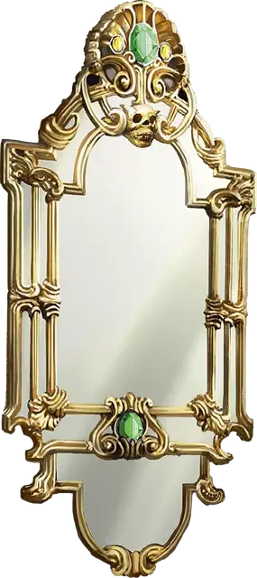

Зеркало похищения жизни
Mirror of Life Trapping
Чудесный предмет, очень редкий

Рекомендованная стоимость 40 000 ЗМ
Когда это зеркало высотой 4 фута и шириной 2 фута рассматривается не прямо, на его поверхность виднеются едва заметные образы существ. Зеркало весит 50 фунтов (~25кг), имеет Класс Защиты 11, Хиты 10, иммунитет к урону Ядом и Психическому урону, а также Уязвимость к Дробящему урону. Оно трескается и уничтожается, когда его Хиты снижаются до 0.
Если зеркало висит на вертикальной поверхности и вы находитесь в пределах 5 футов от него, вы можете действием Магия произнести командное слово, активируя его. Зеркало активно, пока вы действием Магия не повторите командное слово, деактивируя его.
Любое существо, кроме вас, которое видит своё отражение в активном зеркале, находясь в пределах 30 футов от него, должно пройти спасбросок Харизмы Сл 15, иначе вместе со всем, что оно несёт и носит, будет поймано в одной из двенадцати межпространственных камер зеркала. Существо, знающее о природе зеркала, совершает этот спасбросок с Преимуществом, а Конструкты преуспевают в спасброске автоматически.
Межпространственная камера — это бесконечное пространство, заполненное густым туманом, видимость в котором ограничена 10 футами. Существа, запертые в камерах зеркала, не стареют, и им не нужно есть, пить или спать. Существо, пойманное в камере, может освободиться с помощью магии, позволяющей межпланарное перемещение. При отсутствии таких возможностей оно остаётся в камере, пока не будет освобождено.
Если зеркало поймало существо, но все двенадцать межпространственных камер уже заняты, зеркало освобождает одного из пойманных им существ, выбирая случайным образом, чтобы освободить место для нового пленника. Освобождённое существо появляется в незанятом пространстве в пределах видимости зеркала, но лицом от него. Если зеркало разбить, все существа, содержащиеся в нём, освобождаются и появляются в незанятых пространствах рядом с ним.
Находясь в пределах 5 футов от зеркала, вы можете действием Магия назвать одно из запертых в нём существ или номер одной из камер. Названное или запертое в указанной камере существо появляется на поверхности зеркала в виде образа. Вы и это существо можете вести между собой общение.
Аналогичным образом вы можете действие Магия произнести второе командное слово, чтобы освободить одно из запертых в зеркале существ. Освобождённое существо вместе со своим снаряжением появляется в ближайшем незанятом пространстве рядом с зеркалом, лицом от него.
Если поместить зеркало внутрь межпространственного пространства, созданного Сумкой хранения, Переносной дырой или подобным предметом, оба предмета немедленно уничтожаются, и на том месте, где один предмет был помещён внутрь другого, открываются врата на Астральный План; при этом любое существо в пределах 10 футов от врат, не находящееся за Полным укрытием, затягивается внутрь и оказывается в случайной точке Астрального Плана. После этого врата закрываются. Врата односторонние и не могут быть открыты повторно.